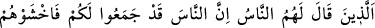
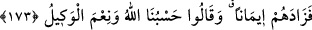

arasındaki Ravha’ya gelince, pişman olup geri dönerek geri kalan mü’minleri de
katletmek istediler. Bu niyetleri Hz. Peygamber (s.a.)’e ulaşınca, Ebû Süfyân’ın üzerine
yürümek için ashâbını harekete geçirerek şöyle buyurdu: “Bizimle beraber, dünkü
günümüze iştirak edenlerden başka kimse gelmesin!”
Bu ifadede geçen “dünkü günümüze” lâfzından maksat, savaştır. Çünkü Araplar,
mühim vak’alara “gün” derler ve bu vak’aları, Allah’ın günleri diye anarlar. Rasûl-i
Ekrem, bir güç ve gövde gösterisi olarak bir grup müslümanla birlikte yola koyuldu.
Nihâyet Medîne’ye sekiz mil mesafedeki Hamrâü’l-Esed’e vardılar. Ashâb-ı Kirâm,
aralarında yaralılar da bulunmasına rağmen, mükâfat ve ecri kaçırmamak için, bu büyük
meşakkate katlandılar. O sırada Allah Teâlâ, müşriklerin kalbine korku düşürmüş ve
müşrikler çekip gitmişlerdi. İşte bu âyet-i kerîme bunun üzerine nâzil oldu. Bu olay,
Uhud gazvesinden hemen sonra olan Hamrâü’l-Esed Gazvesi’dir. Küçük Bedir Gazvesi
ise bu gazveden bir sene sonra vuku’ bulmuştur. Aşağıdaki âyette, Küçük Bedir
Gazvesi’ne işâret edilmektedir.
173. Bir kısım insanlar, mü’minlere: “Düşmanlarınız olan insanlar, size karşı
asker topladılar; aman sakının onlardan!” dediklerinde bu, onların îmanlarını bir
kat daha arttırdı ve “Allah bize yeter. O ne güzel vekîldir!” dediler.
“Onlar ki halk kendilerine” sözündeki, “halk”tan maksat; Abd-i Kays kabîlesinden
olup müslümanları karşılayan bir gruptur. Ya da Nuaym b. Mesûd Eşcaî’dir. Sadece
Nuaym’dan “halk” diye bahsedilmesi, bu kişinin, bu halkın cinsinden; sözünün de
bunların sözünden olması hasebiyledir. Meselâ tek bir attan başka atı olmayan, bir tane
de elbisesi olan bir kişi için: “Filan zât atlara biner, elbiseler giyer” denilmesi gibi. Ya
da Medîne’deki bazı zâtlar da bu kişiye kapılıp onu dinledikleri için bu kişiye
“insanlar” denmiştir.
Ebû Süfyân ve arkadaşları, “size karşı toplandılar, onlardan korkun” sözünün
mânası şudur: Rivâyete göre: Ebû Süfyân Medîne (Uhud)’den Mekke’ye müteveccihen
yola çıkmaya karar verince: “Yâ Muhammed! Gelecek sene Küçük Bedir mevsiminde
tekrar savaşmaya var mısın?” demiş, Peygamber Efendimiz (s.a) “İnşâallah!” demişti.
[147] Ertesi sene Ebû Süfyan Mekkelilerle beraber yola çıktı. Merrü’z-Zahrân’a gelince,
Allah kalbine korku düşürdü ve geri dönmenin daha iyi olacağını düşündü. O sırada,
Abd-i Kays kabîlesinden bir grup, sefer azığı almak üzere Medîne’ye giderlerken, Ebû
Süfyân’la karşılaştılar. Ebû Süfyân, bunlara müslümanları savaştan vazgeçirmeleri için
bir deve yükü kuru üzüm vadetti.
İkinci rivâyete göre, Ebû Süfyân, umre yapmış olarak (memleketine) dönen Nuaym b.
Mesûd’la karşılaştı. Ona: “Yâ Nuaym!” Bedir mevsiminde Muhammed’le savaşmak